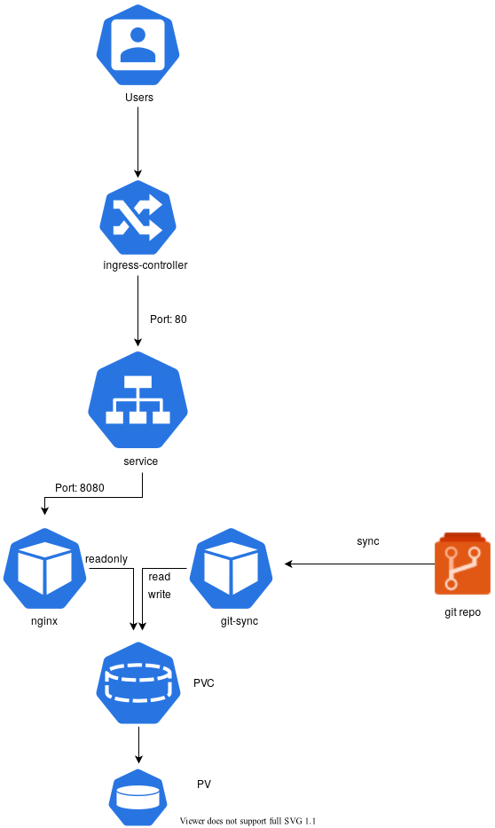

Kubernetes, Static Website, Git
Uzun bir aradan sonra Kubernetes ile ilgili bir konu ile yazilara basliyoruz. Bu yazida Kubernetes nedir? Ne degildir? gibi Kubernetes 101'den bahsetmek yerine bir senaryo ile ilgili sizlere fikir vermek istedim. Hemen kisaca senaryodan bahsedelim:
Senaryo:
Gunumuzde insanlar blog yazilarini yayinlamak icin static websites generator'lardan(nikola, jekyll, hugo vb.) birini kullanmaya yoneliyor. Daha onceden siklikla Wordpress kullanilirken artik bu sekilde bir cozum kullanimin farkli sebepleri olabilir. Bunu simdilik irdelemeyecegim. Bu senaryomuzda yukarda bahsettigimiz sekilde olusturdugunuz static websitenizi "Kubernetes uzerine git ile nasil otomatik update edebiliriz?" cozumu hakkinda fikir verecegim. Senaryo semasinin ayrintilari asagidaki gibidir:
Senaryoyu biraz daha ayrintilandirmak gerekirse, en alt katmandan en uste dogru cikalim. Bu senaryo icin volume olarak node uzerindeki Local diski kullandim. Bu production icin uygun olmasa da test ortamini olusturmak ve iki container'in ayni volume'u kullanabilmesi icin bunu sectim.
PersistentVolume ve PersistentVolumeClaim Olusturulmasi:
Burada bir noktaya deginmek gerekirse olusturacagimiz bu volume'u nginx container'i icin sadece readonly mount ederken git-sync icin ise hem read hem de write olacak sekilde mount edecegiz. git-sync belirledigimiz git reposunu buraya sync edecektir. Bu yuzden hem read hem write yetkisi gerekirken, nginx sadece sayfalari yayinlayacagi icin read yetkisi yeterlidir.
PersistentVolume:
apiVersion: v1 kind: PersistentVolume metadata: name: my-local-pv-01 spec: capacity: storage: 1Gi accessModes: - ReadWriteOnce persistentVolumeReclaimPolicy: Delete storageClassName: my-local-storage local: path: /mnt/disk1/vol1 nodeAffinity: required: nodeSelectorTerms: - matchExpressions: - key: kubernetes.io/hostname operator: In values: - node3
Yukardaki sekilde sadece node3 hostname'li node uzerindeki '/mnt/disk1/vol1/' uzerinde 1GB buyuklugunde persistentVolume olusturduk. Yukarida da belirttigim gibi kesinlikle production ortaminda local disk kullanmayin!
$ kubectl apply -f pv.yaml
persistentVolume olusturtuktan sonra persistentVolumeClaim olusturalim.( "pv ve pvc nedir?" merak ediyorsaniz buradan )
PersistentVolumeClaim:
kind: PersistentVolumeClaim apiVersion: v1 metadata: name: my-claim-01 spec: accessModes: - ReadWriteOnce storageClassName: my-local-storage resources: requests: storage: 1Gi
$ kubectl apply -f pvc.yaml
Volume olusturdugumuza gore artik yayinlayacagimiz static websitesi icin deployment asamasina gecebiliriz.
Deployment:
Asagidaki sekilde deployment olusturalim:
apiVersion: apps/v1 kind: Deployment metadata: name: blog spec: replicas: 1 selector: matchLabels: app: blog template: metadata: labels: app: blog spec: containers: - name: git-sync image: k8s.gcr.io/git-sync/git-sync:v3.2.0 volumeMounts: - name: www-persistent-storage mountPath: /tmp/git env: - name: GIT_SYNC_REPO value: https://github.com/user_name/blog.example.com.git - name: GIT_SYNC_DEST value: "blog" - name: GIT_SYNC_WAIT value: "10" - name: www image: nginxinc/nginx-unprivileged ports: - containerPort: 8080 volumeMounts: - name: www-persistent-storage mountPath: /usr/share/nginx/html readOnly: true volumes: - name: www-persistent-storage persistentVolumeClaim: claimName: my-claim-01 nodeSelector: kubernetes.io/hostname: node3 --- apiVersion: v1 kind: Service metadata: name: blog-svc spec: ports: - port: 80 targetPort: 8080 protocol: TCP name: http selector: app: blog
git-sync environment degerlerinden GIT_SYNC_REPO yerine git reponuzu ve GIT_SYNC_DEST degerini isteginize gore degistirebilirsiniz.
$ kubectl apply -f deployment.yaml
Deployment olusturulup tamamlandiktan sonra websitemizi yayinlamak icin ingress olusturabiliriz.
apiVersion: networking.k8s.io/v1beta1 kind: Ingress metadata: name: blog-ingress spec: # ingressClassName: nginx # use only with k8s version >= 1.18.0 rules: - host: blog.example.com http: paths: - path: /blog backend: serviceName: blog-svc servicePort: 80
$ kubectl apply -f ingress.yaml
ingress tanimlamamiz da yapildigina gore http://blog.example.com/blog adresinden websitemize ulasabiliriz. Artik git uzerine sayfalarinizi push'ladiktan sonra sayfaniz otomatik guncellenecektir. Umarim size fikir vermistir.
Comments